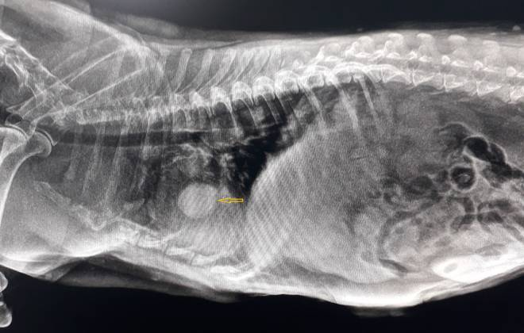
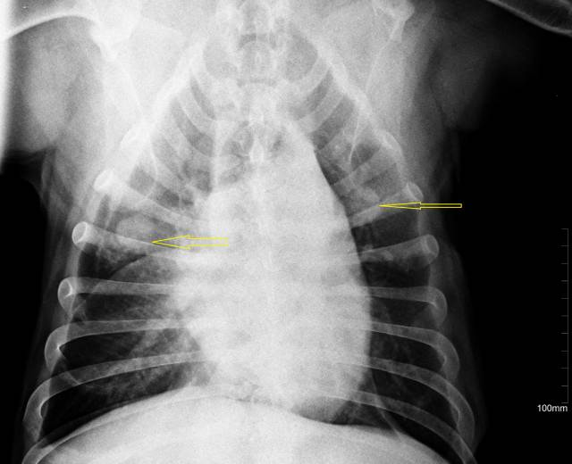

Выпот в грудной полости
Метастазы легких собаки
Метастазы собака
СТОИТ ЛИ ЖДАТЬ? ИЛИ КОГДА ПРОГНОЗЫ ПЛОХИЕ.
Опухоль молочных желез – это самая распространенная опухоль у сук, не прошедших процедуру овариогистерэктомии (стерилизация). У кошек опухоль молочных желез стоит на третьем месте по распространенности, но, в сравнении с собаками, опухоль молочных желез кошки чаще будет злокачественной. И если у собак, соотношение злокачественных и не злокачественных опухолей молочных желез варьируются в соотношении 50/50, то у кошек здесь явно превалируют злокачественные новообразования, достигая 80% в сравнении с доброкачественными.
Причины возникновения рака молочных желез и способы профилактики мы рассматривали в более ранней статье.
В это же коротко поговорим о прогнозах когда процесс значительно запущен и мы можем наблюдать отдаленное метастазирование опухоли. Опухоль молочных желез метастазирует лимфогенным (через лимфатические сосуды) и гематогенным (через кровеносные сосуды) путями. Отдаленные метастазы можно увидеть в печени, почках, лимфоузлах, легких и т.д. Разумеется прогнозы в таком случае резко ухудшаются и могут сокращаться буквально до нескольких месяцев, даже при проводимом лечении.
И хотя кажется, что единственным логичным методом решения проблемы является оперативное вмешательство, в нашей клинике мы не всегда советуем ее проведение. Иногда для того, чтобы продлить жизнь животному, оперативное лечение наоборот может быть противопоказано.
Подводя краткое резюме, хочется выделить несколько важных аспектов:
Не откладывайте визит к онкологу, если обнаружили «какую-то горошинку» на молочной железе у своей кошки или собаки.
Если не планируете для своего животного продолжение рода, лучше озаботьтесь его кастрацией в молодом возрасте.
Помните, что сегодня, с развитием ветеринарии, появилось много способов помочь животному даже в случае, если начальное время возникновения опухоли все-таки упущено.
Наша клиника специализируется на онкологических заболеваниях животных и имеет возможность диагностики и ведения этих специфических пациентов. Мы сотрудничаем с онкологами России и Европы и постоянно «держим руку на пульсе», стараясь использовать все новейшие исследования для продления и облегчения жизни онкологических пациентов.
На фото легкие, пораженные метастазами рака молочной железы у собак и метастатический выпот в грудной полости кошки с опухолью молочной железы.